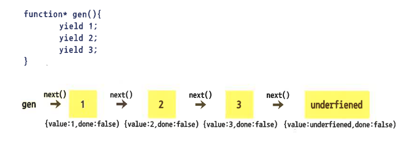

- 제너레이터(generator)는 이터러블 규약과 이터레이터 규약을 따르는 제너레이터 객 체를 만들어 주는 함수이다 . 위에서 살펴본 것처럼 두 규약을 따르는 객체는 @@iterator 메서드와 next 메서드를 구현해줘야 하는데, 이를 작성하기가 간단하지만은 않다. 이를 좀 더 쉽게 구현하도록 하는 것이 제너레이터 함수다.
- 제너레이터 함수는 호출이 되면 바로 실행되는 것이 아니라 제너레이터 객체를 반환하고 멈춰있다. 반환된 제너레이터 객체에 next 메서드를 호출하면 그때 제너레이터 함수의 구문이 실행되며, yield(일드:산출) 표현식을 만나면 실행을 멈추고 해당 표현식이 가리키는 값이 next 메서드가 반환히는 객체의 value 속성값이되며, done 속성값은 false가 된다. 다시 next 메서드 호출 시 이를 반복하다가 yield 표현식이 마지막까지 진행된 뒤에 next 메서드를 호출하면 이터레이터 객체와 마찬가지로 next 메서드가 반환하는 객체의 value 속성값이 undefined가 되고, done 속성값은 true가 된다.

function* name(param){
statement
}
| function* | function 뒤에 *를 붙여 제너레이터 함수를 선언한다. |
|---|---|
| name | 제너레이터 함수의 이름 |
| param | 매개변수 |
| statement | 제너레이터 함수에 구현될 구문들이 오며, yield 표현식을 쓸 수 있다. |
- 이터러블 규약과 이터레이터 규약을 따르는 객체로 작성한 코드와 제너레이터 함수로 작성한 코드를 비교해 보자. 먼저 직접 두 규약을 따르는 객체를 작성한 코드를 살펴보면,
let iterator = {
i:0,
[Symbol.iterator]:function(){
return this;
},
next:function(){
return (this.i < 3) ? {value:this.i++, done:false} : {value:undefined, done:true}
}
}
for(let value of iterator){
console.log(value); // 결과는 0, 1, 2
}
위의 코드는 이전 예제에서 이미 다룬 코드이다. 객체에 직접 @@iterator 메서드와 next 메서드를 구현하여, 이터러블 규약과 이터레이터 규약을 따르도록 하였다. 다음 코드는 제너레이터 함수로 변경하여 같은 동작을 보다 쉽게 구현하였다.
function* gen(){
for(let i=0; i<3; i++){
yield i;
}
}
let generator = gen();
for(let value of generator){
console.log(value); //결과는 0, 1, 2
}
- 위의 두 코드를 비교해 보면 제너레이터 함수를 사용하는 쪽이 @@iterator 메서드와 next 메서드를 작성해줄 필요가 없어 코드를 작성하기 쉽고 읽기도 더 수월하다. 제너레이터 함수의 동작 상태를 다시 한 번 살펴보면 다음과 같다.
실행 : http://127.0.0.1:8887/ex03_03.html (실행 : X)
function* gen(){
for(let i=0; i<3; i++){
yield i;
}
}
let generator = gen(); // 제너레이터 함수를 호출 시 제너레이터 객체가 반환하고 동작을 멈춘다.
console.log(iteratorResult); // 결과는 {value: 0, done:false}
- 제너레이터 객체는 이터러블 규약과 이터레이터 규약을 따르기 때문에 for...of 문으로 순회하거나, next 메서드를 호출하여 열거가 가능하다. 그래서 위의 문장은 실행되지 않음.
let iteratorResult = generator.next(); // 제너레이터 객체에 next 메서드를 호출하면 // 제너레이터 함수의 yield 표현식을 만날 때까지 진행한다. // yield 표현식 뒤의 값은 next 메서드가 반환하는 객체 // (iterator result object)의 value 속성값이 된다.
- 제너레이터 함수의 yield 표현식 사이에 다른 제너레이터 함수의 yield 표현식 이어붙이기를 제공한다. 하나의 제너레이터 함수에서 전체를 처리하기가 복잡하거나 전에 작성하였던 제너레이터 함수를 재사용해야 하는 경우에 유용하다.
제너레이터 이어붙이기(yield*)의 사용 방법은 yield 표현식 뒤에 *을 붙이고 뒤에 다른 제너레이터 함수 호출 구문을 넣어 주면 된다.
- 다음과 같이 yield 표현식 뒤에 *을 붙여 작성한다.
function* gen(){
yield* generator();
}
- 좀 더 쉽게 이해할 수 있도록 다음 코드의 사용 예를 살펴보면, gen1 제너레이터 함수의 yield 표현식 중간에 gen2의 yield 표현힉을 연결하는 예이다.
function* gen1(n){
yield n + 1;
yield* gen2(n); // gen2 제너레이터 함수률 호출하여 yield 표현식을 이어 붙임
yield n + 2;
}
function* gen2(n){
yield n + 100;
yield n + 200;
}
let generator = gen1(100);
for(let value of generator){
console.log(value); // 결과는 101, 200, 300, 102
}
- 위 코드의 동작을 살펴보면
let generator = gen1(100) // 인자값 100을 전달하고, 반환된 제너레이터 객체를 변수 generator에 할당
- generator 객체를 순회하면 yield. 표현식을 순차적으로 실행시킨다. 실행되는 순서를 살펴보면,
n = 100 gen1 - yield n + 1 = 101 gen1 - yield* gen2(n) // 여기서 gen2 제너레이터 함수의 yield 표현식을 연결 gen2 - yield n + 100 = 200 gen2 - yield n + 200 = 300 // gen2 제너레이터 함수의 yield 표현식이 종료되고 // 다시 gen1의 yield 표현식으로 연결된다. gen1 - yield n + 2 = 102 // gen1 제너레이터 함수의 yield 표현식도 종료된다.
- 지금까지 살펴본 제러레이터 객체는 이터레이터 객체와 동일하게 동작함을 볼 수 있다. 이터레이터 객체는 이러테이터 규약을 따르므로 next 메서드가 구현되어 있다. 제너레이터 객체는 next 메서드 이 외 제너레이터 객체의 열거를 종료해주는 return 메서드와 오류를 발생시키는 throw 메서드를 추가 제공한다.
| next | 제너레이터 객체를 순차적으로 열거한다. |
|---|---|
| return | 제너레이터 객체의 열거를 종료한다. {value:undefined, done:true}를 반환한다. |
| throw | 제너레이터 객체의 열거 중 강제로 오류를 발생시킨다. {value:undefined, done:true}를 반환한다. |
- 제너레이터 객체의 return 메서드는 제너레이터 객체의 열거를 종료한다. 다음 코드를 통해서 return 메서드를 살펴보자.
function* gen(){
let i = 0;
while(i>= 0){
yield i++;
}
}
let generator = gen();
console.log(generator.next()); // {value:0, done:false}
console.log(generator.next()); // {value:1, done:false}
console.log(generator.next()); // {value:2, done:false}
// return 메서드 호출 후 결과값은 {value:underfined, done:true}
console.log(generator.return());
console.log(generator.next()); // {value:underfined, done:true}
- 제너레이터 함수로 부터 얻은 제너레이터 객체에 next 메서드 호출 시 yield 표현식의 값이 next 메서드의 return 값의 value 속성값이 된다. 위의 결과처럼 value 속성값은 1씩 증가하다가 return 메서드 호출 시 제너레이터 객체의 열거가 종료된다. 종료 후의 value 속성값은 undefined 이며, done 속성값은 true 이다.
- 제너레이터 객체의 throw 메서드는 제너레이터 객체의 열거 중 강제로 오류를 발생시킨다. 다음 코드를 콩해서 throw 메서드를 살펴보자.
function* gen(){
let i = 0;
while(i>= 0){
try{
yield i++;
} catch(e) {
}
}
}
let generator = gen();
console.log(generator.next()); // {value:0, done:false}
console.log(generator.next()); // {value:1, done:false}
console.log(generator.next()); // {value:2, done:false}
// throw 메서드 호출 후 결과값은 'throw errow'
generator.throw(); // 'throw errow'
// {value:3, done:false}
console.log(generator.next()); // {value:4, done:false}
- 제너레이터 함수로 부터 얻은 제너레이터 객체에 next 메서드 호출 시 yield 표현식의 값이 next 메서드의 return값의 value 속성값이 된다. 위의 결과처럼 value 속성값은 1 씩 증가하다 throw 메서드 호출 시 강제로 오류가 발생하여 catch문의 ‘throw error’를 출력하고 next 메서드와 마찬가지로 value 속성값이 1씩 증가 한다.
- 다음은 제너레이터 객체와 이터레이터 객체를 비교한 표 이다.
| iterration | iteration 종료 또는 오류 발생 | |
|---|---|---|
| generator | yield 표현식을 사용한다 | iteration을 종료시키는 raturn 메서드와 오류를 발생시키는 throw 메서드를 제공한다 |
| iterator | @@iterator 메서드를 구현한다 | 별도로 제공하는 메서드가 없어 직접 구현해야 한다 |
- 다음 코드는 직접 이터레이터 객체를 구현하고 있다. 이터레이터 객체에 next 메서드를 호출하면 fruits 속성의 배열을 앞에서부터 순차적으로 열거해주고 모두 열거 시 value 속성값은 undefined기 되고 done 속성값은 true가 되어 for...of 문으로 열거 시 종료된다.
<!DOCTYPE html>
<html>
<head>
<title>for...of문</title>
<script type="text/javascript">
let iterator = {
fruits:['사과', '바나나', '포도', '딸기'], // next 메서드가 호출되면 배열의 값을 열거
[Symbol.iterator]:function(){ // @@iterator
return this;
},
next:function(){
let value = this.fruits.shift(); // next 호출시 배열 원소값을 앞에서 잘라 옮
let done = (value) ? false : true; // value 값이 긍정이면 done은 false이고,
// 배열 원소가 모두 잘라져 value 값이
// 부정이 되면 done은 true
return {value:value, done:done};
}
}
for(let value of iterator){
console.log(value); // 결과값은 사과, 바나나, 포도, 딸기
}
</script>
</head>
<body>
</body>
</html>
- 위의 이터레이터 객체와 동일한 동작을 하는 제너레이터 함수를 작성해 보자. 다음과 같이 코드를 추가하면 된다.
ecma6\complete\chapter3\3-1\ex01.html | http://127.0.0.1:8887\chapter3\3-1/ex01.html
<!DOCTYPE html>
<html>
<head>
<title>for...of문</title>
<script type="text/javascript">
let iterator = {
fruits:['사과', '바나나', '포도', '딸기'], // next 메서드가 호출되면 배열의 값을 열거
[Symbol.iterator]:function(){ // @@iterator
return this;
},
next:function(){
let value = this.fruits.shift(); // next 호출시 배열 원소값을 앞에서 잘라 옮
let done = (value) ? false : true; // value 값이 긍정이면 done은 false이고,
// 배열 원소가 모두 잘라져 value 값이
// 부정이 되면 done은 true
return {value:value, done:done};
}
}
for(let value of iterator){
console.log(value); // 결과값은 사과, 바나나, 포도, 딸기
}
function* gen(){ // 제너레이터 함수를 선언하고, yield 표현식 뒤에 배열에 원소를 차례로 넣어 줌
yield '사과';
yield '바나나';
yield '포도';
yield '딸기';
}
for(let value of gen()){ // 제너레이터 함수를 호출, 제너레이터 객체를 전달 받고 for..of 순회
console.log(value); // 결과값은 위와 같은 결과인 사과, 바나나, 포도, 딸기
}
</script>
</head>
<body>
</body>
</html>
- 제너레이터 함수를 사용하니 보다 쉽게 이터레이터 객체가 구현되었다.
- 맵(Map)은 key, value 쌍(pair), 항목(entries)으로 이루어진 컬렉션(collections)이다. 기존에도 key와 value로 이루어진 컬렉션인 객체가 이미 존재하였다. 현재도 객체는 아주 많이 사용되어지고 있지만 몇 가지 불편한 사항들을 맵에서 개선해 주고 있다. 맵과 객체의 차이를 통해서 맵을 살펴보도록 한다.
- 객체는 추가된 속성의 수를 알려주는 API가 없어 불편하다. 맵은 size 내장 속성으로 추가된 항목의 수를 알기 쉽게 해준다.
map.size // 맵의 항목 수를 출력
- 객체의 속성 key는 문자열 또는 Symbol만 가능하지만 맵 항목의 key는 모든 값이 될 수 있다.
map.add({}, 100); // {}를 key로 사용
- 다음은 객체에 추가된 속성을 읽는 두 가지 방법이다.
obj [ key ] obj.key
- 이는 내장 속성과 구분이 없기 때문에 자칫 추가하려는 속성이 내장 속성과 일치하여 덮어 씌우는 오류를 범할 수 있다.
- 다음은 객체의 내장 속성을 덮어씌워 보았다.
var obj = {}; // 객체를 선언하고
obj.toString(); // toString 내장 함수를 호출하면 "[object Object]" 결과가 출력됨
obj.toString() = function(){} // 내장 함수와 같은 이름의 toString 속성을 추가
obj.toString(); // 결과는 undefined, 내장 속성이 덮어 씌워짐
- 맵은 이와 같은 문제가 발생하지 않도록 set으로 값을 저장하고 get으로 읽어 오도록 하여 내장 속성과의 충돌을 방지한다.
map.set(key, value);
map.get(key); // 내장 속성과 충돌할 염려가 없다
- 객체는 이터러블 규약을 따르지 않아 for...of 문으로 순회가 되지 않지만 맵은 이터러블 규약을 따르기 때문에 for...of 문으로 순회가 가능하다.
for (let value of map){
console.log(value);
}
- 위는 맵과 객체의 차이점으로 맵에 대해서 살펴보았다. 그럼 맵의 사용법에 대해서 좀 더 자세히 알아보도록 하자.
- 먼저, 맵을 선언하는 방법이다. new 연산자 뒤에 Map 함수를 호출하여 맵을 선언한다.
let map = new Map([iterable]);
참고) [iterable] : iterable은 배열이거나, element들이 key-value 쌍을 이루는 다른 iterable 객체이고, 각 key-value 쌍은 새로운 Map에 추가된다.
- 다음은 맵 속성을 정리한 표이다.
| size | 맵에 추가된 항목 수를 알려준다. |
|---|
- 다음은 맵 메서드를 정리한 표이다.
| set(key, value) | 맵에 새로운 항목을 추가하고 맵 인스턴스를 반환 |
|---|---|
| get(key) | 인자와 같은 key를 갖는 항목의 value 값을 반환 |
| clear() | 맵의 항목을 모두 삭제 |
| delete(key) | 인자와 같은 key를 갖는 항목을 삭제 삭제할 항목이 존재할 경우 true 값을, 존재하지 않는 경우 false를 반환 |
| entries() | 추가된 항목을 열거할 수 있는 이터레이터 객체를 반환 |
| forEach(callbackFn) | 맵에 추가된 항목을 순회 |
| has(key) | 인자와 같은 키를 갖는 항목이 존재하면 true, 존재하지 않으면 false를 반환 |
| keys() | 추가된 항목의 key를 열거할 수 있는 이터레이터 객체를 반환 |
| values() | 추가된 항목의 value를 열거할 수 있는 이터레이터 객체를 반환 |
| [@@iterator]() | 추가된 항목을 열거할 수 있는 이터레이터 객체를 반환한다. entries 메서드와 동일 |
- set 메서드는 맵에 새로운 항목을 순서대로 추가해 준다. 인자 key는 항목을 구분하는 역할을 하며, 객체와는 달리 모든 type의 사용이 가능하다. set 메서드의 사용 예를 살펴보자.
let obj = {};
let f = function(){};
let map = new Map();
map.set(obj, 100); // 객체를 key로 사용
console. log (map. size); // 맵 항목수는 1
map.set(f, 200); // 함수를 key로 사용
console.log(map.size); // 맵 항목수는 2
- set 메서드는 호출 뒤에 맵 인스턴스를 반환하기 때문에 다음과 같은 구문의 사용이 가능하다.
map.set('a', 100).set('b', 200);
- get 메서드는 맵에 추가된 항목 중 key 인자와 일치하는 key를 갖는 항목의 value 값을 반환한다. get 메서드의 예를 살펴보면
let obj = {};
let map = new Map();
map.set(obj, 100);
map.get(obj); // 결과값은 100
- clear 메서드는 맵에 추가된 모든 항목을 삭제한다. clear 메서드의 사용 예를 살펴보면
let map = new Map();
map.set('a', 100),set('b', 200); // 항목 두 개를 추가
console.log(map.size); // 결과값은 2
map.clear(); // 항목을 모두 삭제
console.log(map.size); // 결과값은 0
- delete 메서드는 인자 key와 일치하는 항목을 삭제한다. delete 메서드의 예를 살펴보면
let map = new Map();
map.set('a', 100).set('b', 200);
map.delete('b'); // 'b'를 key로 갖는 항목 삭제
mpa.get('b'); // 결과값은 undefined
- entries 메서드는 맵의 항목을 열거할 수 있는 이터레이터 객체를 반환한다. 이터레이터 객체에 next 메서드 호출 시 반횐되는 객체의 value 속성값은 맵의 항목을 원소로 하는 배열([key, value])이 된다. entries 메서드의 사용 예를 살펴보면
let map = new Map();
map.set('a', 100).set('b', 200);
let mapIter = map.entries();
mapIter.next(); // 결과 : {value:['a', 100], done: false}
mapIter.next(); // 결과 : {value:['b', 200], done: false}
mapIter.next(); // 결과 : {value:underfined, done: true}
- 맵 항목이 [key, value] 형태의 배열이 되어 이터레이터 객체에 next 메서드 호출 시 반환 객체의 value 속성값이 되었음을 볼 수 있다.
- forEach 메서드는 맵 항목을 순회한다. 이때 인수인 콜백 함수로 value와 key 그리고 맵을 전달한다. 여기서 유의할 점은 전달 순서가 value, key, map 순이라는 것이다. forEach 메서드의 사용 예를 살펴보면
let map = new Map();
map.set('a', 100).set('b', 200);
map.forEach(function(value, key){
console.log(value, key); // 결과는 100, 'a'
// 200, 'b'
});
- has 메서드는 맵 항목에 인자 key와 일치하는 항목의 유무를 확인한 후 결과를 true, false로 알려준다. has 메서드의 예를 살펴보면
let obj = {};
let map = new Map();
map.set(obj, 100);
map.set({a:100}, 200);
map.has(obj); // true
mpa.has({a:100}); // false (속성과 값은 같지만 따로 생성되었으므로 다른 객체)
- keys 메서드는 맵 항목 전체의 key를 열거 가능한 이터레이터 객체를 반환한다. keys 메서드이 예를 살펴보면
let map = new Map();
map.set('a', 100).set('b', 200);
let mapIter = map.keys(); // 맵 항목 key 전체를 항목으로 하는 이터레이터 객체를 반환
mapIter.next(); // {value: 'a', done:false}
mapIter.next(); // {value: 'b', done:false}
mapIter.next(); // {value: underfined, done:true}
- values 메서드는 맵 항목 전체의 value를 열거 가능한 이터레이터 객체를 반환한다. values 메서드이 예를 살펴보면
let map = new Map();
map.set('a', 100).set('b', 200);
let mapIter = map.values(); // 맵 항목 key 전체를 항목으로 하는 이터레이터 객체를 반환
console.log(mapIter.next()); // {value: 100, done:false}
console.log(mapIter.next()); // {value: 200, done:false}
console.log(mapIter.next()); // {value: underfined, done:true}
- @@iterator 메서드는 entries 메서드와 동일하게 맵의 항목을 열거할 수 있는 이터레이터 객체를 반환한다. 이터레이터 객체에 next 메서드 호출 시 반환되는 객체의 value 속성값은 맵의 항목을 원소로 하는 배열([key, value])이 된다. @@iterator 메서드의 사용 예를 살펴보면
let map = new Map();
map.set('a', 100).set('b', 200);
let mapIter = map[Symbol.iterator]();
mapIter.next(); // 결과 {value:['a', 100], done:false}
mapIter.next(); // 결과 {value:['b', 100], done:false}
mapIter.next(); // 결과 {value:undefined, done:true}
- 셋(Set)은 맵과 달리 value들로 이루어진 컬렉션이다. 배열도 value로만 이루어진 컬 렉션 이지만 둘에는 차이가 있다. 셋은 배열처럼 index로 값을 읽어 올 수 없으며, 열거를 통해서만 값을 얻을 수 있다. 먼저, 셋의 선언 방법이다.
- new 연산자 뒤에 Set 함수를 호출하여 셋을 선언한다.
let set = new Set(iterable);
참고) 셋은 이터러블 객체를 인자로 하며, 중복된 항목은 저장되지 않는다.
- 셋에 저장된 value 값을 다시 저장하려고 하면, 그 값은 저장되지 않는다. 그것은 인자인 이터러블 객체도 마찬가지로 중복된 항목은 한 번만 저장하도록 처리한다. 다음 코드에서 중복된 값의 저장 예를 살펴보면
let set = new Set([1,2,3,1,2,3]); // [1,2,3,1,2,3] 중복된 원소를 갖는 배열을 인자로 할당 console.log(set); // Set{1,2,3} 중복된 value는 저장되지 않음 set.add(2);
- 다음은 셋 속성을 정리한 표이다.
| size | 셋에 추가된 항목 수를 알려준다. |
|---|
- 다음은 셋 메서드를 정리한 표이다.
| add(value) | 셋에 새로운 항목을 추가하고 셋 인스턴스를 반환 |
|---|---|
| clear() | 셋의 항목을 모두 삭제 |
| delete(value) | 인자와 같은 value를 갖는 항목을 삭제 삭제할 항목이 존재할 경우 true 값을, 존재하지 않는 경우 false를 반환 |
| entries() | 추가된 항목을 열거할 수 있는 이터레이터 객체를 반환 |
| forEach(callbackFn) | 셋에 추가된 항목을 순회 |
| has(value) | 인자와 같은 value를 갖는 항목이 존재하면 true, 존재하지 않으면 false를 반환 |
| keys(), values(), [@@iterator]() |
keys, values, @@iterator 메스드 모두 셋의 value를 열거할 수 있는 이터레이터 객체를 반환 |
- add 메서드는 인자 value를 순서대로 셋 항목을 추가한 뒤 셋 인스턴스를 반환한다. add 메서드의 사용 예를 살펴보면
let set = new Set();
set.add(100);
set.add(200);
for(let value of set){
console.log(value); // 결과는 추가된 셋 항목 100, 200
}
- clear 메서드는 셋에 추가된 모든 항목을 삭제한다. clear 메서드의 사용 예를 살펴보면
let set = new Set(); set.add(100); set.add(200); console.log(set.size); // 셋 항목수는 2 set.clear(); console.log(set.size); // 셋 항목수는 0
- delete 메서드는 value 인자와 일치하는 셋 항목을 삭제한다. delete 메서드의 사용 예를 살펴보면
let obj = {};
let set = new Set();
set.add(obj);
set.add(100);
console.log(set.size); // 셋 항목수는 2
set.delete(obj); // 변수 obj와 일치하는 셋 항목 삭제
console.log(set.size); // 셋 항목수는 1
- entries 메서드는 셋 항목을 열거할 수 있는 이터레이터 객체를 반환하는데, 이터레이터 객체의 항목은 셋 항목을 [value, value]의 형태로 하는 배열이 된다. entries 메서드의 사용 예를 살펴보면
let set = new Set('abcabc');
// let set = new Set('abca'); 이렇게 대입해도 결과는 같음
let setIter = set.entries(); // 셋 항목을 열거할 수 있는 이터레이터 객체를 반환
for(let value of setIter){
console.log(value); // 결과는 ['a', 'a'], ['b', 'b'], ['c', 'c']
} // 셋 항목의 value를 첫번째와 두번째 원소로 하는 배열
- forEach 메서드는 셋 항목을 순회한다. 이때 인수인 콜백 함수로 value와 key 그리고 셋을 전달한다. 여기서 유의할 점은 value와 key 둘 다 셋 항목의 value가 할당되어져 있고 전달 순서가 value, key, set 순이라는 것이다. forEach 메서드의 사용 예를 살펴보면
let set = new Set('abab');
// let set = new Set('ababcd'); 결과는 a, a, b, b, c, c, d, d
set.forEach(function(value, key){
console.log(value, key); // 결과는 'a', 'a'
// 'b', 'b'
// value, key 모두 셋 항목의 value와 같다
});
- has 메서드는 셋 항목에 인자 value와 일치하는 항목의 유무를 확인한 후 결과를 true, false로 알려준다. has 메서드의 사용 예를 살펴보면
let obj = {};
let set = new Set();
set.add(obj);
console.log(set.has(obj)); // 결과는 true, 셋 항목에 변수 obj객체가 존재
- keys, values, @@iterator 메서드들은 모두 셋 항목을 열거할 수 있는 이터레이터 객체를 반환한다. 먼저 살펴본 entries 메서드도 같은 역할을 하지만 entries 메서드 같은 경우 이터레이터 객체의 열거 항목이 [key, value]와 같은 형태였다면 keys, values, @@iterator 메서드는 value만 열거된다. keys, values, @@iterator 메서드의 사용 예를 살펴보면
let set = new Set('abab');
// keys
let keys = set.keys();
for(let value of keys){
console.log(value); // 결과는 'a', 'b'
}
// values
let values = set.values();
for(let value of values){
console.log(value); // 결과는 'a', 'b'
}
// @@Iteratro
let setIter = set[Symbol.iterator]();
for(let value of setIter){
console.log(value); // 결과는 'a', 'b'
}
- keys, values, @@iterator 메서드 모두 동일한 결과가 출력되었다.
- 위크맵(WeakMap)은 맵과 같이 key와 value 쌍으로 이루어진 항목을 갖는 컬렉션이며, 맵과 기능이 거의 동일하다.
다만 맵과 위크맵의 차이는 맵 항목 key는 타입 제한이 없는데, 위크맵 항목 key는 *참조 타입만 허가한다. 이는 위크맵의 모든 항목이 삭제되었을 때 가비지 컬렉션의 수거 대상이 되도록 하기 위해서 이다. 그렇기에 위크맵 항목 key는 열거되거나 조회될 수 없다. 조회가 된다는 것은 위크맵 항목에 key를 직접 저장해야만 가능하기 때문이다. 즉, 위크맵은 맵 API와 모두 동일하나 열거 관련 메서드와 목록 수 조회 속성이 존재하지 않는다.
* 원시 타입과 참조 타입
- 자바스크립트에서는 원시 타입(primitive type)과 참조 타입(reference type)이라는 두 가지 자료형이 존재한다. 숫자, 불린값, null과 undefined는 원시 타입이고, 객체, 배열, 함수는 참조 타입에 해당한다.
- 원시 타입 데이터는 변수에 할당될 때 메모리상에 고정된 크기로 저장되고 해당 변수가 원시 데이터 값을 보관한다. 참조 타입 데이터는 크기가 정해져 있지 않고 변수에 할당될 때 값이 직접 해당 변수에 저장될 수 없으며, 변수에는 데이터에 대한 참조만 저장된다.
- 먼저, 위크맵을 선언하는 방법이다. new 연산자 뒤에 WeakMap 함수를 호출하여 위크맵을 선언한다.
let weakMap = new WeakMap([iterable]);
| [iterable] | iterable은 배열(key가 될 원소는 반드시 참조 타입)이거나, element들이 key, value 쌍을 이루는 다른 iterable 객체이고, 각 key, value 쌍은 새로운 위크맵에 추가된다. |
|---|
- 다음은 위크맵 메서드를 정리한 표이다.
| set(key, value) | 위크맵에 새로운 항목을 추가하고 위크맵 인스턴스를 반환 |
|---|---|
| get(key) | 인자와 같은 key를 갖는 항목의 value 값을 반환 |
| delete(key) | 인자와 같은 key를 갖는 항목을 삭제 삭제할 항목이 존재할 경우 true 값을, 존재하지 않을 경우 false를 반환 |
| has(key) | 인자와 같은 key를 갖는 항목이 존재하면 true, 존재하지 않으면 false를 반환 |
- set 메서드는 맵의 set 메서드와 동일하나 항목 key가 반드시 침조 타입 이어야 한다는 점의 차이가 있다.
- 위크셋(WeakSet)은 셋과 같이 value로만 이루어진 항목을 갖는 컬렉션이며 셋과 기능이 거의 같다. 셋은 value의 타입 제한이 없으나，위크셋 value는 참조 타입만 허가한다.
이는 위크셋의 모든 항목이 삭제되었을 때 가비지 컬렉션의 수거 대상이 되도록 하기 위해서 이다.
그렇기에 위크셋 항목의 value는 열거되거나 조회될 수 없다. 조회가 된다는 것은 위크셋 내부 항목에 value를 직접 저장해야만 가능하기 때문이다. 즉，위크셋은 셋 API와 모두 동일하나 열거관련 메서드와 목록 수 조회 속성이 존재하지 않는다.
- 먼저, 위크셋을 선언하는 방법이다. new 연산자 뒤에 WeakSet 함수를 호출하여 위크셋을 선언한다.
let weakSet = new WeakSet([iterable]);
| iterable | 위크셋은 이터러블 객체(참조 타입만 허용)를 인자로 하며, 중복된 항목은 저장되지 않음 |
|---|
- 다음은 위크셋 메서드를 정리한 표이다.
| add(value) | 위크셋에 새로운 항목을 추가하고 셋 인스턴스를 반환 |
|---|---|
| delete(value) | 인자와 같은 value를 갖는 항목을 삭제 삭제할 항목이 존재할 경우 true 값을, 존재하지 않을 경우 false를 반환 |
| has(value) | 인자와 같은 value를 갖는 항목이 존재하면 true, 존재하지 않으면 false를 반환 |
- add 메서드는 셋의 add 메서드와 동일하나 항목 value가 반드시 참조 타입 이어야 한다는 차이점이 있다.
- 이번 장에서는 새로운 컬렉션인 맵, 셋, 위크맵, 위크셋에 대해서 살펴보았다. 다음은 객체와 셋의 차이점을 정리한 표이다.
| 항목 | 항목 조회 | |
|---|---|---|
| 객체(Object) | key와 value로 이루어지며, 내장 속성이 덮어씌워 지므로 주의 | 별도로 제공하는 메서드가 없고, 이터러블 규약을 따르지 않으므로 for...of 문으로 열거할 수 없음 |
| 맵(Map) | key와 value로 이루어지며, 따로 항목을 추가할 수 있는 메서드를 제공하므로 내장 속성을 덮어씌울 염려가 없음 | 항목을 열거할 수 있도록 entries 메서드를 제공하며, 이터러블 규약을 따르므로 for...of 문으로 열거할 수 있음 |
| 셋(Set) | value로만 이루어지며, 별도로 항목을 추가할 수 있는 메서드를 제공하므로 내장 속성을 덮어 씌울 염려가 없음 | 항목을 열거할 수 있도록 entries 메서드를 제공하며, 이터러블 규약을 따르므로 for...of 문으로 열거할 수 있음 |
- 다음은 컬렉션과 위크컬렉션의 차이점을 정리한 표이다.
| 맵(Map) | 셋(Set) | |
|---|---|---|
| 컬렉션 | 항목이 key와 value로 이루어지며, key의 유형으로 원시 타입과 참조 타입 모두 가능 | 항목이 value로 이루어지며, value의 유형으로 원시 타입과 참조 타입 모두 가능 |
| 위크컬렉션 | 항목이 key와 value로 이루어지며, key의 유형으로 참조 타입만 가능 | 항목이 value로 이루어지며, value의 유형으로 참조 타입만 가능 |
- a:100, b:200, c:300을 갖는 객체 리터럴로부터 속성 수를 얻는 예제를 미리 작성해두었다. 미리 작성된 객체 리터럴과 같은 key와 value를 갖는 맵을 작성하고 항목수를 출력해본다.
<!DOCTYPE html>
<html>
<head>
<title>새로 추가된 컬렉션(collections)</title>
<script type="text/javascript">
// Object
let obj = {a:100, b:200, c:300}; // 객체 리터럴에 key와 value 할당
let size = 0;
for(let prop in obj){ // 객체 속성수는 조회할 수 있는 API가 없으므로, 반복문으로 갯수를 셈
size++;
}
console.log(size); // 갯수는 3개
</script>
</head>
<body>
</body>
</html>
- 위 예제와 같은 동작을 하는 예제를 맵으로 작성해 보자.
ecma6\complete\chapter3\3-2\ex01.html | http://127.0.0.1:8887/chapter3/3-2/ex01.html
<!DOCTYPE html>
<html>
<head>
<title>새로 추가된 컬렉션(collections)</title>
<script type="text/javascript">
// Object
let obj = {a:100, b:200, c:300};
let size = 0;
for(let prop in obj){
size++;
}
console.log(size);
// Map
let map = new Map([['a',100],['b',200],['c',300]]);
// 다음 항목을 갖는 맵 생성 key: 'a', value: 100
// key: 'b', value: 200
// key: 'c', value: 300
console.log(map.size); // 갯수는 3
</script>
</head>
<body>
</body>
</html>
- 결론은, 객체는 갯수를 조회할 수 있는 API가 없지만 맵은 조회수를 size 매서드를 사용하여 간단하게 조회할 수 있다.
- 변수 str 문자열 값을 한 글자씩 배열의 원소로 하는데, 중복된 글자는 제외시키도록 미리 작성해두었다. 이와 같은 동작을 하는 셋을 작성해 보자.
<!DOCTYPE html>
<html>
<head>
<title>새로 추가된 컬렉션(collections)</title>
<script type="text/javascript">
let str = '공부합시다 ES6 ES6';
// Array
let arr = [];
const unique = function(text){ // 배열에 추가된 글자인지 확인하는 함수
let isUnique = true;
for(let value of arr){
if(value == text) isUnique = false;
}
return isUnique; // 배열에 없는 글자라면 true, 있다면 false를 반환
}
for(let text of str){ // 문자열을 한글자씩 순회
let isUnique = unique(text);
if(isUnique) arr.push(text); // unique 함수를 통해 배열에 존재하는 문자열인지
// 확인 후 배열에 없을 경우 추가
}
for(let value of arr){
console.log(value); // 출력 : '공', '부', '합', '시', '다', ' ', 'E', 'S', '6'
} // 중복된 글자는 추가되지 않음
</script>
</head>
<body>
</body>
</html>
- 위 예제와 같은 동작을 하는 예제를 셋으로 작성해 보자.
ecma6\complete\chapter3\3-2\ex02.html | http://127.0.0.1:8887/chapter3/3-2/ex02.html
<!DOCTYPE html>
<html>
<head>
<title>새로 추가된 컬렉션(collections)</title>
<script type="text/javascript">
let str = '공부합시다 ES6 ES6';
// Set
let set = new Set(str);
for(let value of set){
console.log(value);
}
</script>
</head>
<body>
</body>
</html>
- 결론은, 셋을 사용하면 배열을 사용했을 때처럼 복잡한 로직없이 간단하게 항목이 중복 추가되지 않도록 할 수 있다.